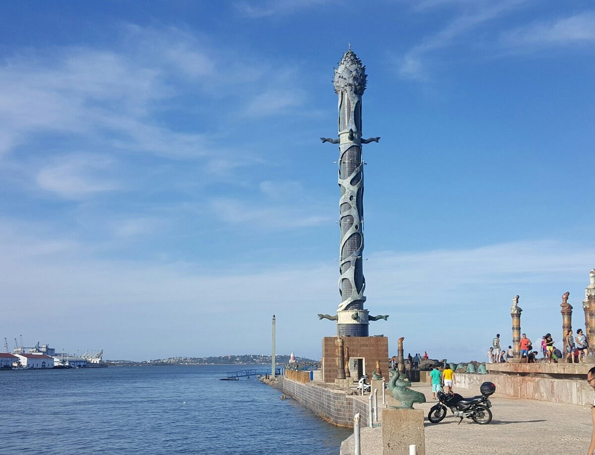
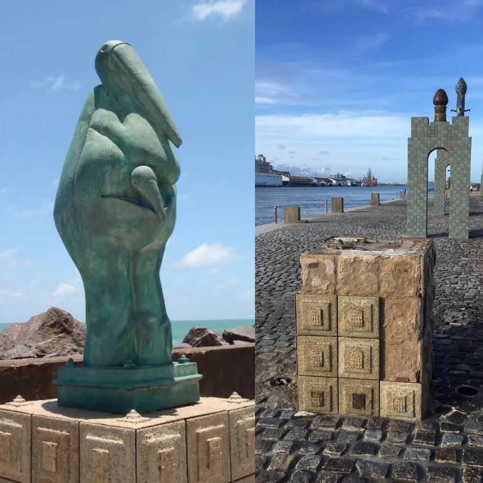

O **Parque das Esculturas Francisco Brennand** é um dos pontos turísticos mais icônicos do Recife, localizado em um molhe no meio do mar, em frente ao Marco Zero. Criado pelo renomado artista pernambucano Francisco Brennand, o parque reúne um conjunto de obras monumentais, com destaque para a **Coluna de Cristal**, que simboliza a conexão entre a terra e o mar. Acessível por barco ou pela passarela do Recife Antigo, o local oferece uma experiência única, combinando arte, natureza e uma vista deslumbrante da cidade. O parque é um tributo à criatividade e ao talento de Brennand, sendo um passeio imperdível para quem visita o Recife.
 